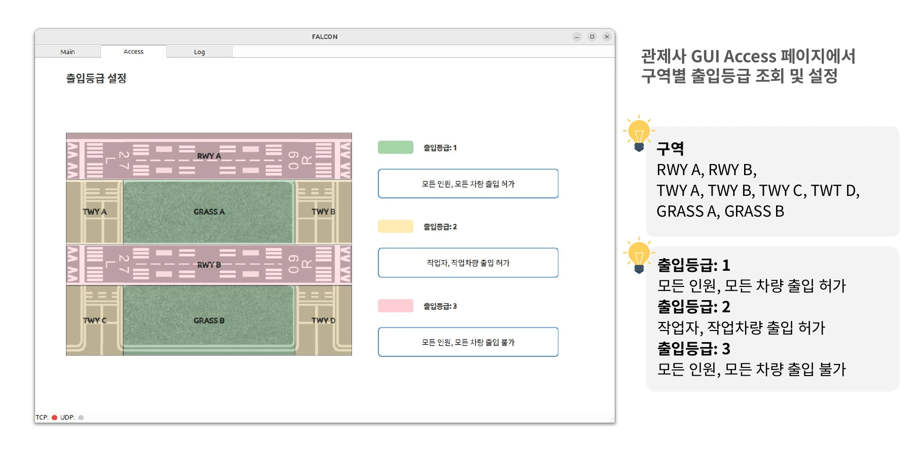
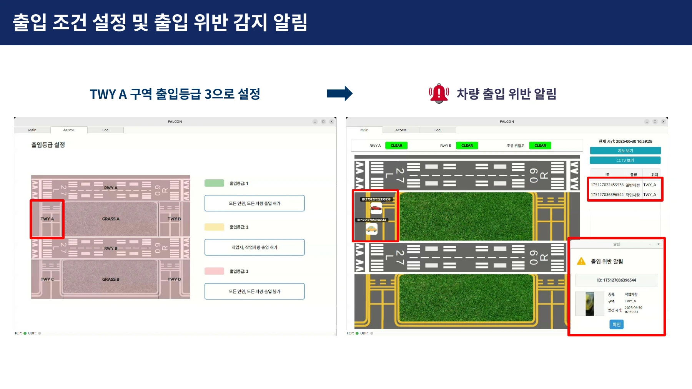

위험요소 감지부터 경보까지의 서비스 흐름
카메라 영상에서 위험요소를 감지하면 종류와 위치를 분석해 관제 지도에 표시합니다. 관제사는 지도 마커와 팝업으로 위험요소를 확인하고, 조종사는 음성 경보로 위험정보를 전달받습니다.

시스템 설계
지상·조류 탐지 서버, 관제 PC, 조종사 PC를 메인 서버로 연결했습니다. 각 탐지 서버는 카메라 영상을 분석하고, 메인 서버는 탐지 결과와 위험정보를 관리해 관제 화면(Hawkeye)과 조종사 서비스(RedWing)로 전달합니다.

초기 위험요소 객체탐지 모델 학습
지상 탐지 대상은 조류, 이물질, 야생동물, 사람, 차량, 항공기 6종으로 정했습니다. 처음에는 공개 이미지 약 15,000장으로 모델을 학습했지만, 공항 모형을 촬영한 영상에서는 작은 객체를 잘 찾지 못했습니다.
실제 공항 사진과 모형의 크기·형태·배경 차이를 줄이기 위해 학습 데이터를 다시 구성했습니다.
합성·실제 데이터를 결합한 모델 개선
팀에서 Polycam과 Blender로 모형을 가상 환경에 재현했습니다. 합성 데이터 담당 팀원은 Unity로 촬영 각도·조명을 바꾸며 이미지와 객체 위치 라벨을 자동 생성했습니다.

합성 이미지 3,000장과 실제 촬영 이미지 1,000장을 섞어 경량 객체 탐지 모델 YOLOv8n을 학습했습니다.
학습 데이터별 탐지 성능

테스트에서 가장 좋은 결과를 보인 합성·실제 혼합 데이터 모델을 지상 탐지에 사용했습니다.
구역별 출입등급에 따른 위험 알림
활주로에서 감지한 사람과 차량을 모두 위험으로 처리하면, 정상적인 작업에도 알림이 발생해 서비스의 신뢰도가 떨어진다고 판단했습니다. 이륙을 앞둔 활주로에는 사람과 차량이 진입하면 안 되지만, 정비 중인 구역에는 작업자와 작업 차량이 들어가야 합니다.
그래서 공항을 8개 구역으로 나누고, 관리자가 구역별 출입등급을 설정하도록 했습니다. 감지한 객체의 종류와 해당 구역의 등급을 비교해 출입 조건을 위반한 경우 알림을 보냅니다.

아래는 유도로 A를 출입 금지로 설정한 뒤 차량의 출입 위반을 알리는 화면입니다.

카메라 영상에서 객체의 구역 판별
출입등급을 적용하려면 감지한 객체가 어느 구역에 있는지 알아야 했습니다. 영상에서 기준점을 식별할 수 있는 사각 마커(ArUco)를 사용해 카메라 좌표와 지도 좌표를 연결했습니다.
마커 중심의 실제 위치를 측정하고 영상에서 같은 마커의 픽셀 위치를 찾았습니다. 두 좌표의 대응 관계로 평면 좌표변환 행렬(Homography)을 구해 객체의 중심점을 지도 좌표로 옮기고, 활주로·유도로·잔디 중 어느 구역에 있는지 판단했습니다. 저는 좌표변환 조사·테스트를 맡았고, 백엔드 팀원이 변환 로직을 설계했습니다.

추적 알고리즘 ByteTrack으로 움직이는 객체를 계속 추적하고, 형광 조끼와 차량 색상으로 작업자·작업 차량을 구분했습니다. 객체의 종류와 위치를 출입등급과 함께 판단해 관제 지도와 알림에 반영했습니다.
모형 환경에서 통합 시연
공항 모형에 배치한 객체를 탐지하고, 형광 조끼를 입은 작업자를 구분하는 동작을 확인했습니다. 탐지한 위치를 관제 화면에 표시하고 조종사 음성 경보로 전달하는 흐름까지 연결했습니다.